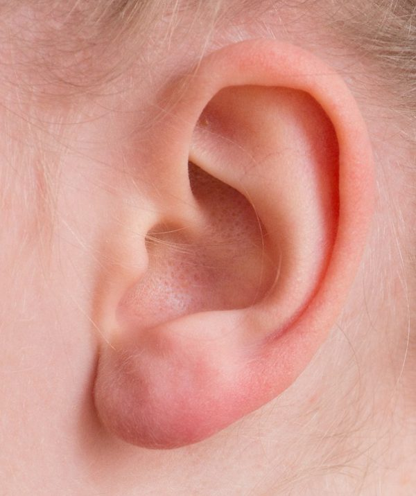
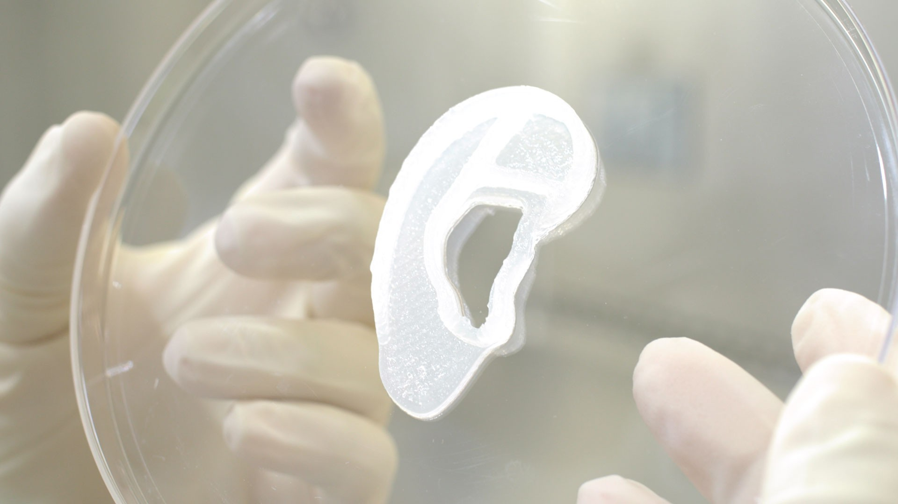

Técnicas para su fabricación

Hay muchas técnicas para la fabricación de orejas artificiales para transplantes. Por ejemplo:
Fabricación de Órganos HumanosDiego Lung 2°C |
Características del Órgano (Oreja) |
|
|  |
El pabellón del oído, llamado vulgarmente oreja, es una dilatación laminar situada en las partes laterales de la cabeza. Se hallan comprendidas entre dos horizontales, una superior al borde externo de la ceja y la otra inferior por el ala nasal. Su altura por término medio es de 60 a 65 mm. y su anchura de 25 a 35 mm. En un trasplante de oreja, se buscaría una coincidencia de tejidos entre el donante y el receptor para que haya menos riesgo de rechazo. El trasplante de oreja implicaría trasplantar tanto el cartílago como la piel, por eso se debe tener cuidado en todas las características que podría requerir este tipo de operaciones. |
Técnicas para su fabricación |
|
|
Hay muchas técnicas para la fabricación de orejas artificiales para transplantes. Por ejemplo: |
Beneficios y propuestas de mejora |
|
|  |
Un transplante te puede brindar diferentes beneficios y/o mejoras en tu audición, a parte de aumentar la capacidad de audición (si la perdida de la oreja es por la estructura interna de la oreja), o para poder captar de mejor manera de donde vienen los sonidos que podrían llegarle al paciente, pero también podría mejorar por lo estético, generando más confianza en el paciente que se le ha hecho el transplante. |
Opinión |
|
 |
Mi opinión sobre el transplante de el órgano que estamos hablando que es la oreja, es algo increíble que la tecnología en la salud haya avanzado tanto y que le puede dar una segunda oportunidad a la gente que perdió este órgano por diferentes sircunstancias y esto le puede dar a esa persona que necesita esta prótesis una mejora en su estilo de vida. |